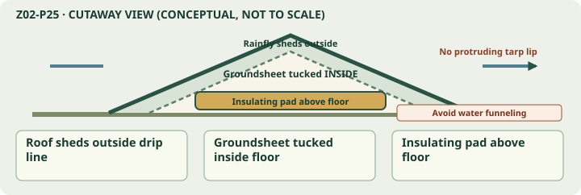

Z02-P25 · Shelter and housing · Adapted historical material
Layer groundsheets without funneling rainwater under the tent floor
Protect tent floors from abrasion and damp soil while preventing protruding plastic edges from collecting rain pools.
When it applies · Pitching a commercial tent or tarp shelter over damp soil, gravel or wet forest duff.
Equipment · Purpose-sized tent footprint or clean groundsheet slightly smaller than the floor, plus dry sleeping pad.

Actions
- Trim or fold the groundsheet cleanly underneath the shelter so every edge stops a few inches inside the tent floor perimeter—never sticking out past the rainfly drip line.[E20, E04, ED]
- Place the groundsheet on smooth, cleared durable ground free of sharp sticks or stones that can puncture waterproof coatings under body weight.[E20, E22, ED]
- Recognize that a waterproof groundsheet stops liquid seepage only—it provides almost no thermal insulation from cold ground, so an insulating pad is still mandatory inside.[E05, E20]
Failure recognition · Spreading an oversized blue tarp out beyond the tent walls where it catches roof runoff and channels a puddle directly underneath the floor seams.[E04, E20, ED]
Verify · Walk the perimeter and confirm zero groundsheet fabric protrudes beyond the shelter wall or catches roof drips.[E20, ED]
Stop or change course · If surface water begins flowing across the pad despite proper groundsheet tucking, relocate the shelter to higher draining ground immediately.[E04, E20]
Evidence and editorial notes
- E04 · NWS · Flood Safety: Key Points for Camping and Hiking (agency PDF)
- Section: Before and during camping; know your surroundings · Conditions: Stream valleys and runoff channels subject to flash flooding
Support: Choose higher ground away from water channels. Rain far upstream can drive rapid flooding.
Limitations: Dry streambeds and gentle swales can flood rapidly without local rainfall. · Conflicting evidence: None; aligns with NWS-FLOOD.
Editorial note: Core hydrological exclusion rule for shelter placement. · Specialist reviewer: Emergency management and hydrology
Primary source · checked 2026-11-24 - E05 · NWS · What To Do If You're Caught in a Winter Storm (current web edition)
- Section: Outside and find shelter · Conditions: Cold, wet or windy winter conditions
Support: Block wind, stay dry and keep off cold ground. Keep exposure reduction separate from making a fire.
Limitations: Improvised windbreaks do not provide rated thermal protection or snow-load capacity. · Conflicting evidence: None; aligns with CDC-H.
Editorial note: Separates wind, ground, and moisture heat-loss pathways. · Specialist reviewer: Cold-weather shelter specialist
Primary source · checked 2026-11-24 - E20 · NPS · Camping: What to Bring (current web edition)
- Section: Camping: What to Bring > Shelter and Sleep System · Conditions: Overnight camping across three-season and cool conditions
Support: Match tent/tarp, groundsheet, sleeping pad, and sleeping bag ratings to expected night lows and precipitation; test pitching and inspect poles, zippers, and stakes before departure.
Limitations: Manufacturer comfort ratings assume dry insulation, ground pad use, and adequate caloric intake. · Conflicting evidence: None; reinforces pre-trip inspection and dry-sleep separation.
Editorial note: Anchors manufactured shelter selection, groundsheet fit, and gear readiness. · Specialist reviewer: Shelter equipment and field education
Primary source · checked 2026-11-24 - E22 · NPS · Leave No Trace Seven Principles (current web edition)
- Section: Principle 2 > Travel and Camp on Durable Surfaces · Conditions: Campsite selection and shelter setup on public lands
Support: Pitch shelters on established pads, rock, gravel, dry grass, or snow rather than fragile meadows or saturated shorelines; do not alter terrain or cut live vegetation for shelter frames.
Limitations: Deadfall shelter construction is inappropriate in high-use or protected zones except genuine life-safety emergencies. · Conflicting evidence: Restricts destructive improvised shelter building during routine trips.
Editorial note: Separates lawful low-impact practice from emergency improvised cover. · Specialist reviewer: Land management and wilderness ethics
Primary source · checked 2026-11-24
Source lineage · B012 P12 and NPS camping gear; new manuscript · Classification · Adapted historical material.